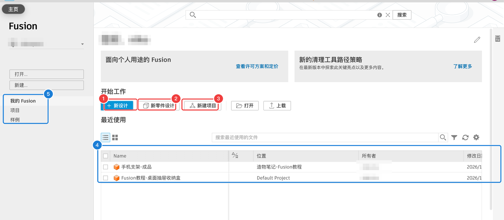
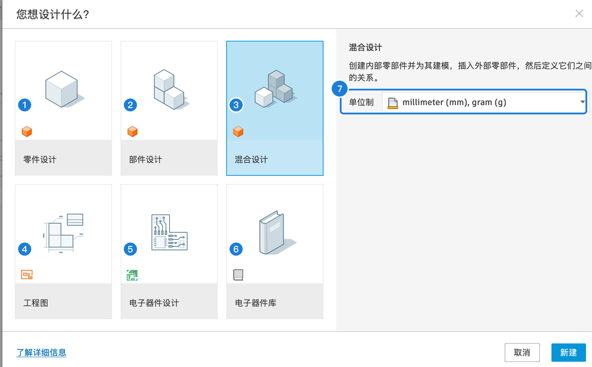

0.3 安装、账号与许可
这一页讲怎么拿到 Fusion：下载安装、注册账号、选择许可（个人版 / 教育版），以及打开软件后看到的首页和“新建设计”窗口。
选择许可：个人版还是教育版#
| 个人版（Personal） | 教育版（Education） | 商业版 | |
|---|---|---|---|
| 价格 | 免费 | 免费 | 付费订阅 |
| 谁能用 | 个人、非商业用途 | 在校学生、老师（需要学校身份验证） | 所有人 |
| 可编辑的设计数 | 最多 10 个（数据面板右上角显示，比如 4 / 10） | 不限 | 不限 |
| 仿真、衍生式设计 | ❌ | ✅ | ✅ |
| 其他 | 部分导出格式、加工、渲染功能有限制（用到时会说明） | 功能基本完整 | 完整 |
下载、安装、登录#
- 浏览器打开 Autodesk Fusion 官网（搜索 “Autodesk Fusion personal” 能找到个人版入口），按提示注册 Autodesk 账号。
- 下载安装程序，双击安装。安装程序会联网下载完整软件，需要一些时间。
- 打开 Fusion，用刚才的账号登录。
首页#
登录后看到的是首页（左上角房子图标随时可以回来）：

首页
| 编号 | 区域 | 作用 |
|---|---|---|
| 1 | 新设计 | 新建一个设计（会弹出选择类型的窗口，见下文） |
| 2 | 新零件设计 | 直接新建一个“零件设计” |
| 3 | 新建项目 | 在云端新建一个项目（相当于文件夹） |
| 4 | 最近使用 | 最近打开过的设计，双击打开。列出了位置（在哪个项目）和修改日期 |
| 5 | 左侧导航 | 我的 Fusion（首页）/ 项目（浏览全部项目）/ 样例（Autodesk 提供的示例模型，可以打开学习） |
| 打开 / 上载 | 打开云端或本地的文件；上载本地文件到云端 |
“新建设计”窗口：选设计类型#
点「新设计」会弹出这个窗口，先选你要做哪类设计：

设计类型
| 编号 | 类型 | 含义 | 什么时候用 |
|---|---|---|---|
| 1 | 零件设计 | 只做一个零件（单个零部件） | 做一个独立的小零件，比如一个挂钩 |
| 2 | 部件设计 | 把已经做好的零件文件插进来组装（外部零部件） | 零件很多、分别由不同的文件管理时 |
| 3 | 混合设计 | 在一个文件里既能画多个零件，又能插入外部零件，再装配起来 | 本教程默认用这个，手机支架的 4 种零件都在同一个文件里画 |
| 4 | 工程图 | 给已有的设计出二维图纸 | 第 14 章 |
| 5 | 电子器件设计 | 画电路原理图和电路板 | 第 18 章 |
| 6 | 电子器件库 | 做电子元件库 | — |
| 7 | 单位制 | 新设计的单位，默认 millimeter (mm), gram (g) | 保持 mm |